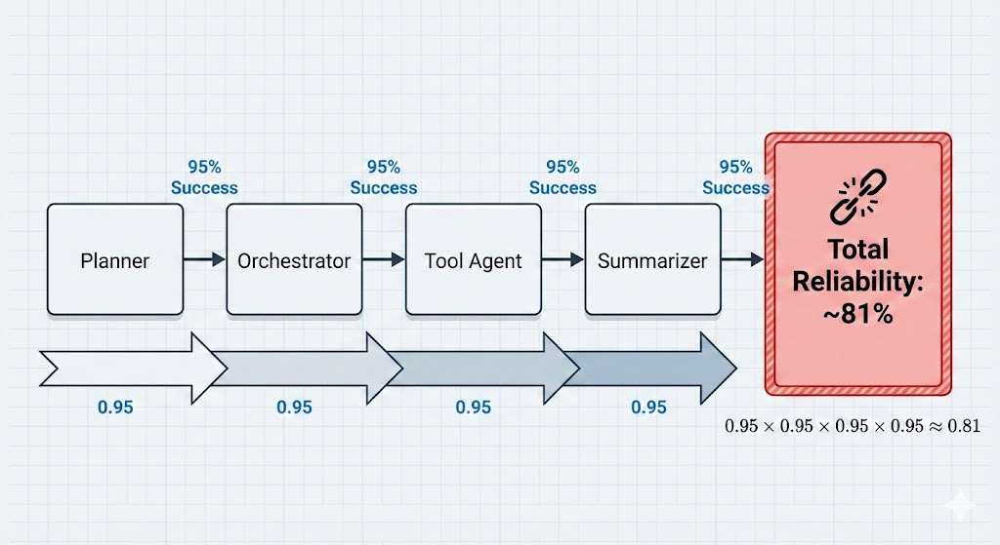
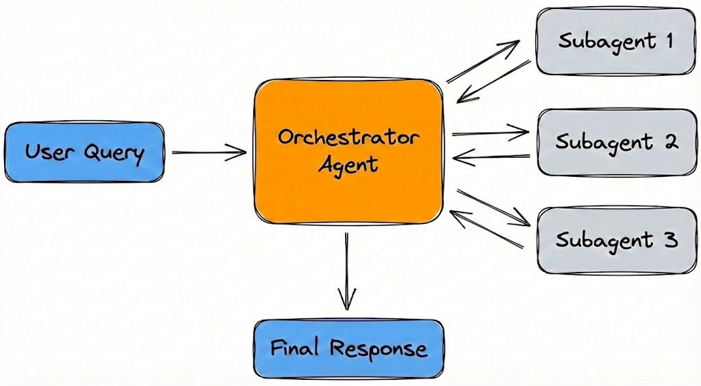
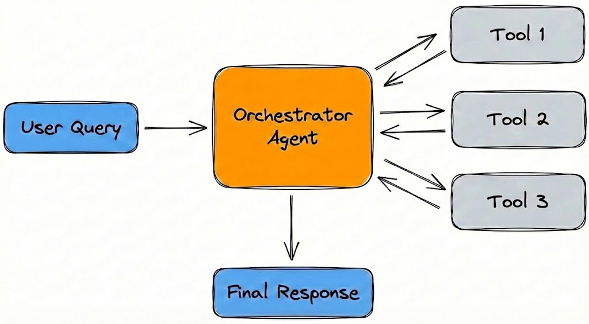
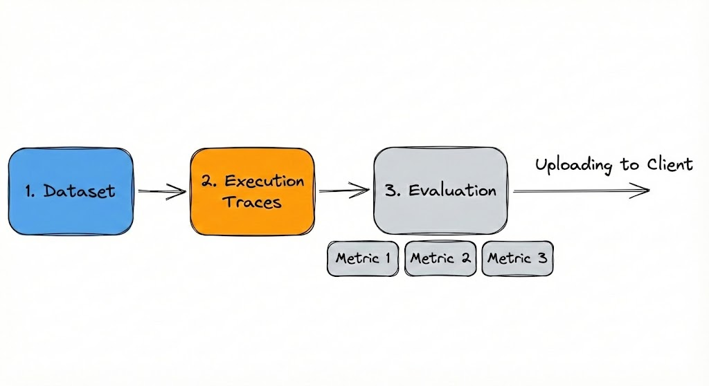
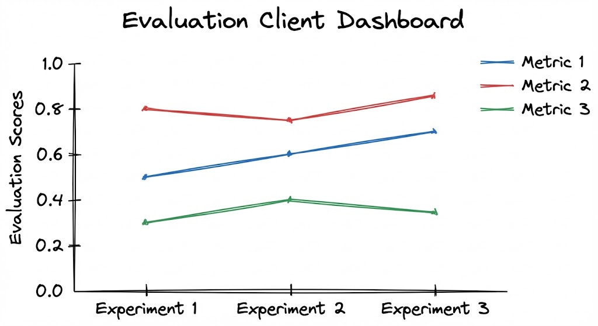
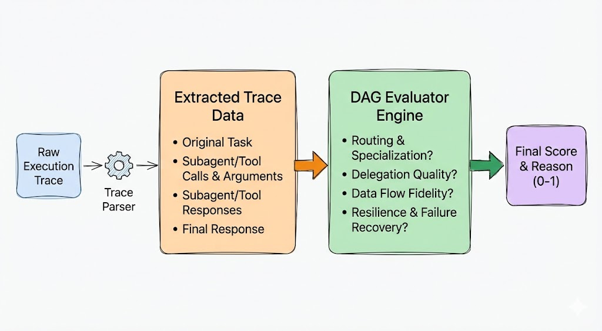

Building reliable AI agents presents a fundamental shift from traditional software engineering. Because Large Language Models (LLMs) operate as probabilistic black boxes, developers face a dual challenge.
Non-linear Improvements: Optimizing a prompt for one specific task can silently degrade performance in adjacent areas.
Emergent Failures: Entirely new classes of unintended behavior emerge as complexity grows. Inherent limitations in reasoning or context retention frequently manifest as confident hallucinations, infinite retry loops, or subtle logic drifts rather than explicit code errors.
Rigorous evaluations are the only defense against regression in agentic systems. As architectures evolve from single-prompt chains to complex orchestrator-subagent models, the surface area for failure expands non-linearly. To ensure stability, teams must maintain and continuously test against a diverse 'Golden Dataset' of use cases that mirror real-world variability.
The Mathematics of Failure
In a monolithic LLM call, you have one point of failure. In an Agentic Orchestrator-Worker architecture, you create a chain of dependencies. If the Orchestrator, the Subagent, the Tool, or the Parser fails, the entire workflow typically results in a zero-value outcome.
Multiplicative Degradation: On adding more specialized subagents to handle diverse tasks, the system's "surface area" for error expands. Consider a workflow requiring 4 distinct components (Planner → Orchestrator → Tool Agent → Summarizer). If each step operates at 95% accuracy, the total system reliability drops significantly to ~81%.

Figure 1: Even with 95% component accuracy, a four-step dependency chain drops total system reliability to ~81%.
Challenges in Building Agentic Systems
I will be sharing insights from my personal experience building agentic systems. I have developed a wide range of architectures, from simple RAG-based chatbots to complex multi-agent systems capable of diverse tasks: from summarizing emails to ordering groceries via a browser. The latter systems utilized an Orchestrator-Subagent architecture, where a high-level orchestrator decomposed tasks across specialized workers, such as Computer Use, Web Search, and Summarization agents.


Orchestrator-SubAgent Architecture
Agent-Tools architecture
Figure 2: A central orchestrator routes tasks to specialized tools and sub-agents, ensuring controlled data flow before synthesizing a final response.
Different configurations gave rise to different complexities. The following are the recurring problems I observed while building these systems:
Prompt Sensitivity: Minor optimizations to system/user prompts intended to fix specific edge cases frequently destabilize previously functional behaviors in unrelated modules.
Incorrect Routing: Even with clear intent, the Orchestrator may occasionally route tasks to incorrect tools (e.g., using a web search tool instead of browser tool).
Reporting Gaps: Subagents often execute tasks successfully but fail to propagate critical data back to the Orchestrator, returning generic confirmations rather than actionable payloads. For example, I frequently saw “Task Done” responses when giving a task to Browser Use Agents.
Observation-Memory Conflict: Agents often struggle to update their internal belief systems when presented with contradictory visual data. An agent might "believe" it has completed a step because it issued the command, failing to process the visual feedback (like a model popup or dropdown) that indicates the action is pending. I saw this while using the GPT-OSS-120B model to run a browser automation.
Context Saturation: Data-heavy tool outputs (such as raw email threads or DOM trees) can cause immediate "hard" failures by exceeding token limits before the model can process the information.
Instruction Drift: In long-running workflows, there are "soft" failures where the model suffers from attention decay. For example, agents often truncate complex URLs (e.g., stripping auth tokens) during handoffs between sub-agents, causing downstream failures despite successful initial retrieval.
With so many points of failure, a robust automated framework is necessary to prevent circular development.
The Evaluation Framework
To tame architectural complexity, I recommend implementing a strict evaluation lifecycle. This framework serves not just as a monitoring tool, but as a gatekeeper for all code changes.
1. Core Terminology
To ensure consistent communication across engineering teams, I will define the following hierarchy of metrics:
Experiment: A single execution run of a specific version of the product (e.g., specific prompt hash, temperature, or model version) against a defined dataset.
Trace: A complete record of a single agent run (or logical workflow), identified by a trace_id.
Span: A unit of work within a Trace (e.g., a function call, LLM call, or tool use) with its own ID, inputs, outputs, and metadata.
Sample Scores: The granular performance rating for a single data point within a dataset, measured across specific criteria (e.g., exact match, latency, tool selection accuracy).
Eval Score: The aggregate performance metric derived from averaging Sample Scores across an entire dataset.
Evaluation Client: The centralized infrastructure that serves as the system of record. It hosts ground-truth datasets, ingests execution traces from agent runs, and stores resulting performance data (e.g., a self-hosted instance of Laminar or LangSmith).
Dashboard: The central visualization interface used to display datasets, track historical experiments, and provide side-by-side comparison views for hyperparameter tuning.
2. What to Trace?
To diagnose logic failures effectively, you must look beyond simple inputs and outputs and capture the agent’s full execution lifecycle. A robust trace schema should include:
Core Context: The ground truth state, including user messages, full conversation history, and the specific System Prompt Version. This is critical for linking performance regressions back to specific code or prompt updates.
Execution Trajectory: The agent’s "thought process," encompassing intermediate Chain-of-Thought reasoning, specific tool inputs/outputs, and visual states (such as screenshots for UI agents).
Operational Metrics: Granular data on token usage and step latency to calculate the "Cost per Task" and pinpoint performance bottlenecks.
Why this matters: High-fidelity tracing reveals the system’s critical bottlenecks, clarifying which metrics (e.g., latency vs. accuracy) you need to prioritize first. It also accelerates Dataset Curation—modern evaluation clients (like Laminar) allow you to directly flag specific trace spans and promote them to your "Golden Dataset," turning every production run into a potential test case.
3. The Evaluation Pipeline
A reproducible automated evaluation loop generally follows a five-step process:
Data Retrieval: The system pulls the target "Golden Dataset" (ground truth) from the Evaluation Client.
Execution: The Agent Executors run the retrieved tasks against the current build of the application.
Trace Collection: Full execution traces are captured, including intermediate thoughts, tool calls, and final outputs.
Scoring: Specialized evaluators (using frameworks like DeepEval) process the traces to generate Sample Scores. This includes single and multi-turn metrics, DAG (Directed Acyclic Graph) logic for complex flows, and LLM-as-a-Judge frameworks for semantic validation.
Synchronization: Final Evaluation Scores and traces are uploaded back to the Evaluation Client, tagged by Group (feature set) and Experiment Name (version ID).

Figure 3: The Evaluation Lifecycle. A continuous automated loop where ground-truth datasets drive execution, traces are scored by judges, and metrics are synced back to the client.

Figure 4: The Experiment Dashboard. A comparative view of performance metrics across different runs, allowing engineers to instantly visualize regressions or improvements.
4. The "Upgrade Protocol" (Regression Policy)
Integrating evaluations into the CI/CD pipeline transitions a team from manual oversight to systematic, data-driven validation. A robust protocol enforces the following logic for all merge requests:
The Baseline Rule: Every update must trigger a fresh run of evals against the relevant datasets.
The Improvement Criteria:
Pass: The update improves the Eval Score without causing regression in other metrics.
Fail: The update lowers the score (Regression).
Neutral (The "Justification" Clause): If an update results in no change to the score, it is rejected unless the developer adds new, valid test cases to the dataset that demonstrate where the improvement occurs.
Datasets and Validation Strategy
To rigorously evaluate agentic architectures, a multi-tiered validation strategy allows testing of different parts of the agentic system.
Component-Level Evaluation (Ablation Studies): Curate distinct, targeted datasets to isolate and validate the performance of individual architectural modules. This granular approach verifies the efficacy of specific subsystems before full integration.
Objective Ground-Truth Evaluation: To minimize ambiguity, curate custom datasets characterized by deterministic ground truth. Unlike creative writing tasks, these focus on logic, retrieval, and factual accuracy where outputs can be programmatically verified.
Public Benchmarks: To contextualize performance within the broader landscape, it is standard practice to incorporate recognized public datasets (e.g., WebArena, GAIA) and subject the model to competitive evaluation via online leaderboards.
Evaluation Metrics
To move beyond simple binary pass/fail metrics, I implemented a "LLM-as-a-Judge" evaluation pipeline to give different kinds of relevant scores:
1. Target Output Comparison
The system compares the agent's final response against a "Target Output" dataset. This reference acts as a semantic checklist containing the Correct Answer (factual conclusion) and Required Information (essential data points that must be present).
For example, DeepEval’s G-Eval (LLM-as-a-judge) can score an output against an expected reference using custom criteria:
from deepeval.metrics import GEval
from deepeval.test_case import LLMTestCaseParams
correctness_metric = GEval(
name="Correctness",
criteria="Determine whether the actual output is factually correct based on the expected output.",
evaluation_steps=[
"Check whether the facts in 'actual output' contradicts any facts in 'expected output'",
"You should also heavily penalize omission of detail",
"Vague language, or contradicting OPINIONS, are OK"
],
evaluation_params=[
LLMTestCaseParams.INPUT,
LLMTestCaseParams.ACTUAL_OUTPUT,
LLMTestCaseParams.EXPECTED_OUTPUT
],
)
2. The DAG Evaluation Dimensions
The Deep Acyclic Graph (DAG) helps to evaluate the structural process that the agentic system took to come up with the final answer. By parsing the chronological execution trace, the system validates logical dependencies and assigns a comprehensive score (0–1). In the Orchestrator-subagent architecture, I made use of DAG to evaluate the agent’s trajectory across the following critical dimensions:
Routing & Specialization Accuracy: Validates whether the Orchestrator prioritized the most appropriate tool. This includes enforcing Tool Fit (penalizing the use of a generic tool when a specialized one is available) and Boundary Enforcement (ensuring subagent tools do not hallucinate capabilities outside their domain).
Delegation Quality (Anti-Micromanagement): Evaluates the abstraction level of instructions. The model rewards high-level, objective-based instructions (e.g., "Research visa requirements") while penalizing micromanagement where the Orchestrator dictates internal sub-steps that a subagent tool should handle autonomously.
Data Flow & Information Fidelity: Performs a conditional dependency check between consecutive nodes (Step N and Step N+1). It verifies that specific entities (dates, names, links) generated in Step N are accurately passed to Step N+1 without hallucination or omission.
Resilience & Failure Recovery: Specifically evaluates response to errors. If a tool reports FAILURE, the judge awards points if the Orchestrator modifies its strategy (e.g., refining a query). Conversely, penalties are applied if the Orchestrator claims success despite underlying tool failures.

Figure 5: DAG Evaluator Engine: Extracting rich details from the trace to assess the agent’s trajectory
3. Statistical Stability
In complex workflows, agents are prone to cascading errors. Because LLMs are non-deterministic, a single "Pass" result is insufficient.
N-Run Methodology: Execute every test case multiple times (e.g., N=3) to normalize results against stochastic variance.
Stability Scoring: Calculate the Mean Success Rate across runs to distinguish between "Brittle Success" (luck) and "Robust Reliability."
Variance Penalty: High variance in scores across runs should trigger a regression alert, ensuring the architecture prioritizes consistency over occasional peak performance.
4. Efficiency Metrics
Finally, it is important to measure the cost of intelligence.
Execution Latency: Speed is a component of accuracy. Faster agents can iterate, detect mistakes, and self-correct efficiently.
Step Complexity: Tracking the delta in the Total Number of Trajectory Steps between versions can indicate efficiency gains or inefficient looping.
Token Efficiency: Tracking Total Token Count serves as a proxy for operational cost and latency, allowing for the quantification of the economic efficiency of different agent architectures.